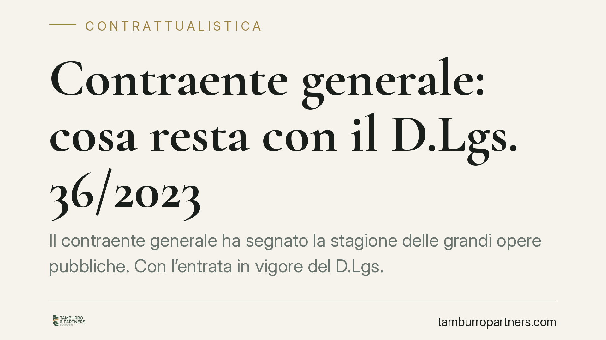

Contraente generale: cosa resta con il D.Lgs. 36/2023
Il contraente generale ha segnato la stagione delle grandi opere pubbliche. Con l'entrata in vigore del D.Lgs. 36/2023 il quadro è mutato: la disciplina autonoma che il vecchio Codice dedicava alla figura non è stata riproposta in modo equivalente. Capire cosa sopravvive, e a quali condizioni, è oggi decisivo per chi negozia o esegue affidamenti complessi.

Un istituto con una storia precisa
La figura del contraente generale (general contractor) nasce con la cosiddetta Legge Obiettivo (L. 443/2001), attuata dal D.Lgs. 190/2002, poi confluito nel D.Lgs. 163/2006 e infine disciplinata dagli artt. 194-199 del D.Lgs. 50/2016.
Quel modello affidava a un unico soggetto non solo la realizzazione dell'opera, ma il completamento della progettazione, il prefinanziamento e una quota rilevante del rischio complessivo. Serviva a concentrare in capo a un contraente qualificato la responsabilità di consegnare l'opera "chiavi in mano".
Cosa cambia con il D.Lgs. 36/2023
Occorre una premessa netta. Il D.Lgs. 50/2016 è stato abrogato e sostituito dal D.Lgs. 36/2023 (Codice dei contratti pubblici), efficace dal 1° luglio 2023. Presentare oggi il vecchio Codice come normativa vigente sarebbe fuorviante.
Il nuovo Codice non riproduce una disciplina autonoma e organica del contraente generale equivalente agli artt. 194-199 del D.Lgs. 50/2016. Il legislatore ha puntato su altri strumenti per la complessità realizzativa, in primis l'appalto integrato (che nel nuovo Codice torna ammesso in via ordinaria) e le concessioni.
Questo non significa che le esigenze sottese al general contractor siano scomparse: significa che vanno oggi ricostruite dentro il quadro vigente, verificando caso per caso quale schema contrattuale sia stato adottato dall'ente concedente e quale ripartizione dei rischi ne discenda. Per i rapporti sorti sotto il vecchio Codice restano rilevanti le regole di diritto transitorio e la disciplina applicabile ratione temporis.
Appaltatore tradizionale e contraente generale: la differenza che conta
La distinzione resta il cuore della materia, anche quando cambia l'etichetta contrattuale.
L'appaltatore tradizionale esegue un'opera su un progetto altrui, predisposto dalla stazione appaltante. Il suo perimetro di responsabilità è ancorato a quel progetto: se il progetto è carente, le conseguenze economiche tendono a ricadere, entro certi limiti, sul committente.
Il contraente generale, nel modello classico, assume anche il completamento progettuale e un'obbligazione tendenzialmente di risultato: si impegna a consegnare l'opera funzionante, non solo a eseguire prestazioni. Cambia la geografia del rischio.
La logica del risultato
È qui che il modello incide di più. Quando l'obbligazione è di risultato, molte varianti e sopravvenienze vengono "assorbite" dal contraente: non danno automaticamente diritto a maggiori compensi, perché rientrano nell'alea che quel soggetto ha accettato consegnando l'opera completata.
La conseguenza pratica è delicata. Riserve e richieste di compenso aggiuntivo che un appaltatore tradizionale potrebbe legittimamente avanzare possono risultare precluse, o fortemente ridimensionate, per chi ha assunto il rischio di risultato.
Per questo la qualificazione del rapporto - appalto, appalto integrato, concessione, schema assimilabile al general contractor - non è un'etichetta formale: determina chi paga cosa quando l'opera si complica.
Poteri espropriativi e ruolo dei Ministeri
Nella disciplina previgente delle grandi opere erano previsti profili peculiari: la possibilità di delega di poteri in materia espropriativa e un ruolo delle amministrazioni centrali, tra cui il Ministero dell'economia e delle finanze e il Ministero delle infrastrutture e dei trasporti, in sede di programmazione e finanziamento.
Si tratta di profili storicamente legati al vecchio impianto. La loro attuale rilevanza va verificata sul testo del D.Lgs. 36/2023 e sulla concreta struttura dell'affidamento, senza presumere una continuità automatica con il passato.
Implicazioni pratiche
Per l'operatore economico il rischio principale è disallineare aspettative economiche e realtà contrattuale. Firmare uno schema che trasferisce il rischio di risultato pensando di poter avanzare riserve come un appaltatore ordinario è un errore costoso.
Per l'ente concedente, il tema è la coerenza: distribuire i rischi in modo chiaro e sostenibile, evitando clausole che generino contenzioso in fase esecutiva.
Cosa fare in concreto
- Identificare lo schema contrattuale effettivo dell'affidamento (appalto, appalto integrato, concessione o modello assimilabile) prima di valutare rischi e margini.
- Analizzare la matrice dei rischi: verificare quali sopravvenienze restano a carico del contraente e quali del committente.
- Verificare la completezza e il livello del progetto posto a base di gara, perché da esso dipende l'ampiezza delle riserve ammissibili.
- Mappare la disciplina di varianti e riserve nel contratto, distinguendo ciò che è "assorbito" dall'obbligazione di risultato da ciò che dà diritto a compenso.
- Accertare l'eventuale delega di poteri espropriativi e il regime dei finanziamenti sul testo vigente, senza dare per acquisiti gli assetti previgenti.
È opportuna una revisione legale del contratto prima della sottoscrizione, con particolare attenzione alla ripartizione dei rischi.
Ogni contratto ha il suo equilibrio.
Se vuoi una revisione delle clausole o una redazione su misura, scrivi allo studio. Ti rispondiamo entro un giorno lavorativo.